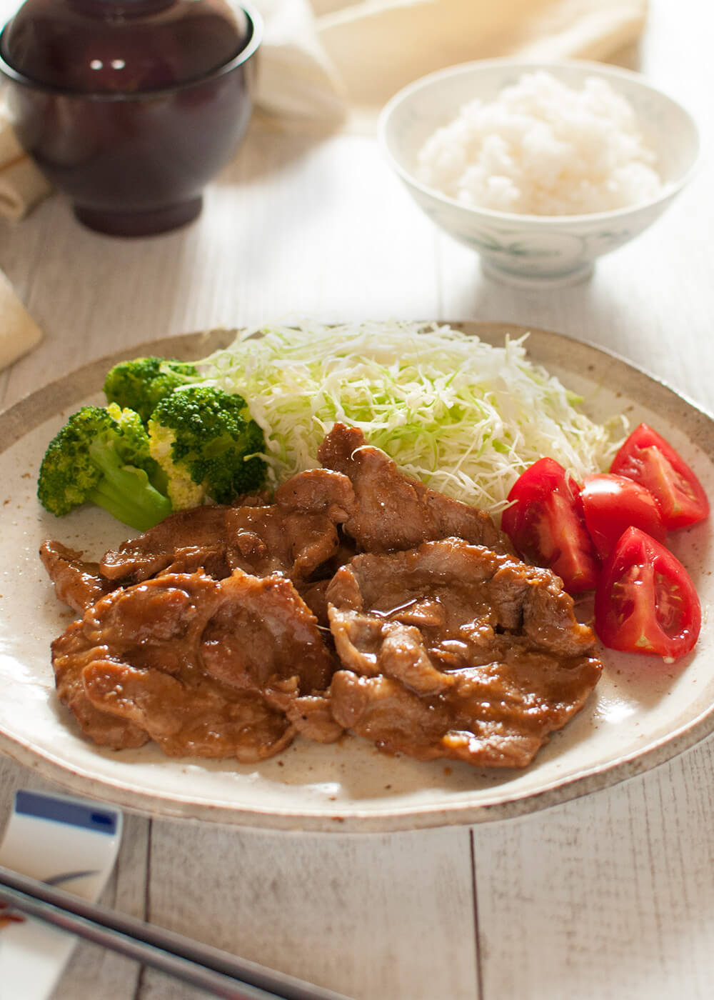

Pork Shogayaki

Description
Pork Shogayaki, also known as ginger pork, is a thinly sliced sautéed pork full of ginger flavour. It is
one of the most popular dishes on the lunch menu and the bento box. It is very simple to make and excellent
for a weekday dinner with a bowl of rice.
Ingredients
- 300g thinly sliced pork
- 2 tsp sake
- 1 tsp ginger juice
- 1 tbsp oil
Ginger sauce
- 2 tbsp sake
- 1 tbsp mirin
- 1 tbsp soy sauce
- 1 tsp sugar
- 1 tbsp grated ginger
To serve
- 160 shredded cabbage
- 4 cherry tomatoes
- 6 broccoli florets
Cooking Instructions
- Sprinkle 2 teaspoons of sake and 1 teaspon of ginger over the pork slices, mix well and leave for at
least 20 minutes to marinate.
- Mix ginger sauce ingredients in a bowl.
- Oil a non-stick fry pan on medium-high heat.
- Place the marinated meat on the fry pan and cook for 2 minutes on each side
- Lower the heat and add ginger sauce.
- Let cook for about one minute and it is now ready to serve.
- In a plate, serve with a bowl of rice and shredded cabbage.